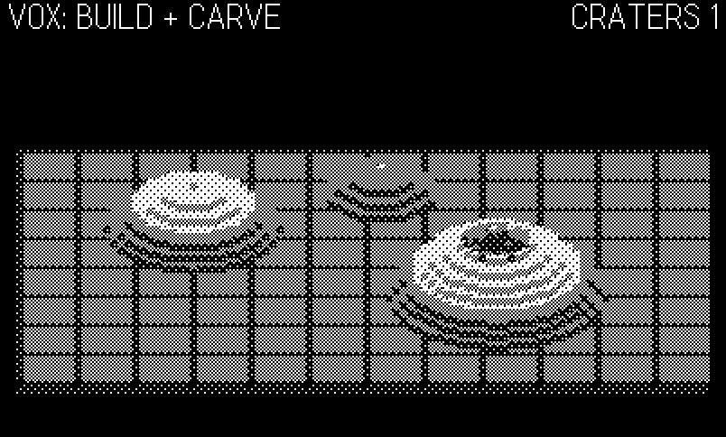
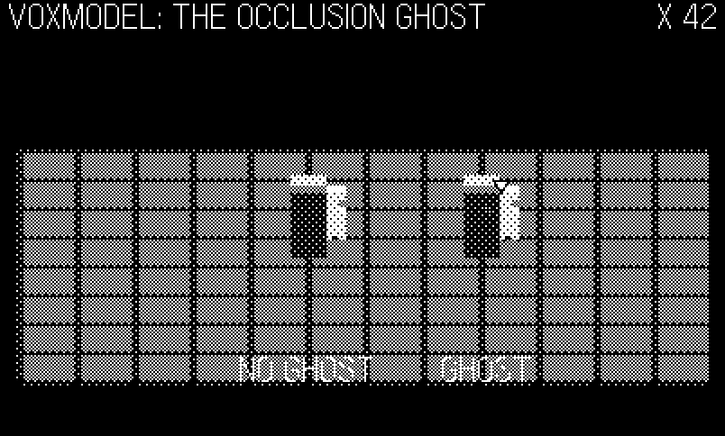
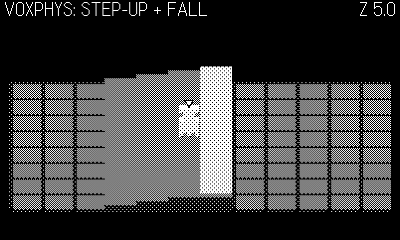
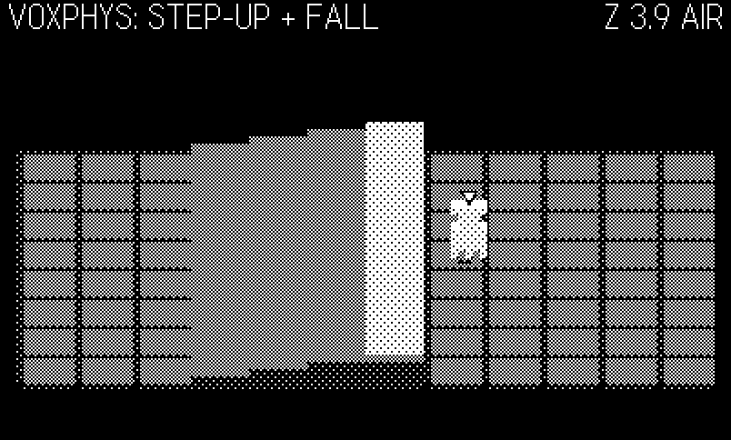
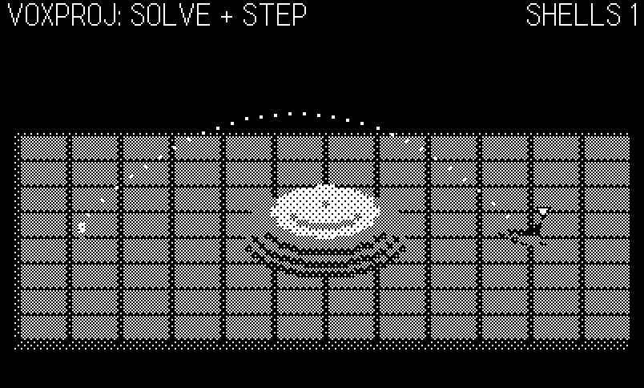

23 Inside Vox: A Voxel Room Engine
The third engine in the catalog answers every question with a cube. Voxel is the collection’s Voxatron homage: one fixed room of 96×64×16 solid voxels, dither-shaded and drawn in a 3/4 projection on the 1-bit screen, fully destructible down to its bedrock floor — and ten shipped games on a core of ten files and 1,131 lines. Where Phosphor’s thesis was everything is lines (Chapter 21) and Tiles’ was the character grid is the single source of truth (Chapter 22), Voxel’s thesis is a rule about admission: a game must use height and volume — dig, lob, climb, flood, fall — to earn the engine. The rule was paid for. Two games were built on this engine and then cut, and the roadmap file keeps the receipts:
✕ Sapper — CUT (July 2026): Bomberman is 2D grid logic in voxel paint — height added nothing, and the 3/4 projection made tall pillars merge into unreadable walls. Design rule learned: a game must use height/volume (dig, lob, climb, flood, fall) to earn the engine.
✕ Redoubt — CUT (July 2026): flat creep-pathing tower defense is 2D-in-disguise (same rule as Sapper). —
voxel/IDEAS.md
A cut records what a screenshot cannot: the engine renders a Bomberman correctly and the result is still a bad game, because a flat maze wears the projection’s costs (merged pillars, occluded actors) while collecting none of its payoffs. Keep that verdict in mind through this chapter — half the engineering below exists to pay down those exact costs for the games that do earn the room.
This chapter also has a second story braided through it, because this engine was rebuilt shortly before the book went to press. The package shipped, the owner was unhappy with it, and two review audits — one hunting correctness bugs, one measuring feature completeness against the sibling engines — returned a memorable verdict: an engine only below the waist. The renderer was first-rate; the cabinet did not exist. Every game hand-rolled its own main loop, mode machine, sound, and particles; none had music or a saved best score; and a dozen real correctness bugs hid in the gap — an AI that aimed through a different integrator than its shells flew, actors that fell through thin spires, saves that silently resurrected dead enemies. The overhaul fixed both halves, and where the before/after teaches something, this chapter tells it. But the subject is the engine as it stands now.
The example, 23-voxel, is an engine tour in the sibling chapters’ format: eight core modules vendored verbatim (one-line provenance headers; otherwise untouched), driven by four scripted screens — terrain authored by the helper stack and cratered live, the occlusion ghost demonstrated against twin pillars, a solved artillery arc with its trajectory traced, and an actor climbing terraces before walking off a cliff. Every core listing below is extracted from the vendored files.
23.1 One room, ten cartridges
The house pattern by now needs one sentence: the Makefile stages core/*.lua beside games/<name>/*.lua into one flat directory, pdc compiles it, and every module is a global table — Vox, VoxModel, VoxPhys, VoxProj, Kit, Snd, Music, Util, Harness — imported in dependency order by a one-line lib.lua shim. The demo’s version is the same list with the book’s scaffolding in front:
import "CoreLibs/graphics"
import "shots"
import "bookharness"
-- the vendored engine, in core/lib.lua's dependency order
import "cutil"
import "vox"
import "voxmodel"
import "voxphys"
import "voxproj"
import "kit"
import "vsnd"
import "vmusic"
-- the demo
import "config"
import "game"
import "input"
import "draw"As in Chapter 22, the core’s own harness.lua stays home: it is the Chapter 18 smoke module, the book’s bookharness.lua defines the same Harness global with the same four-call surface (enabled, count, set, frame), and the engine’s main loop drives it without noticing the substitution. One new wrinkle: this engine’s music module calls Harness.count("musicBars") from inside the core, not just from game code — worth checking before assuming a harness swap is safe, and harmless here because count is part of the shared surface.
Kit.run({
init = function()
-- Kit.run seeds from the clock (right for a shipped
-- game); the figure script wants determinism back
if Harness.enabled and Shots and Shots.seed then
math.randomseed(Shots.seed)
end
Game.init()
end,
extra = function(t)
t.screen = Game.scr
end,
})Kit.run is the cabinet the audit found missing, and this chapter returns to it near the end, after the parts of the engine it was built to serve.
23.2 The projection in two adds
Chapter 8 derived true perspective — divide by depth. Voxel uses none of it. The room is drawn in an oblique 3/4 projection, the Voxatron/Zaxxon convention, and the entire world-to-screen transform is two multiply-adds with constant coefficients:
\[ s_x = \mathrm{OX} + 4x, \qquad s_y = \mathrm{OY} + 2y - 4z, \]
with \(\mathrm{OX}=8\), \(\mathrm{OY}=86\): four pixels per voxel across, two pixels down per step of depth (\(y\), 0 at the back wall), four pixels up per step of height (\(z\), 0 at the floor). No divide means no foreshortening — a voxel is the same size at the back wall and the front lip — which is precisely why a fixed room works: 96 voxels of width is \(8 + 96\cdot4 = 392\) pixels, and the whole 96×64×16 volume lands on the 400×240 screen by construction, no camera, no clipping. The code is the arithmetic:
-- one voxel block drawn directly to the current context (floats fine)
function Vox.drawBlock(px, py, pz, m)
local sx = floor(Vox.OX + px * S + 0.5)
local sy = floor(Vox.OY + py * TY - pz * TZ + 0.5)
gfx.setPattern(PAT[m])
gfx.fillRect(sx, sy, S, TY)
gfx.setPattern(PAT[m - 1])
gfx.fillRect(sx, sy + TY, S, TZ)
endEach voxel is two fills: a 4×2 top face in its material’s dither pattern and a 4×4 front face one shade darker (PAT[m - 1]), the whole room lit from above by that single convention. Materials are the Chapter 4 ramp as five 8-byte patterns, 0 black through 4 white, and the fact that the front face is derived rather than authored is the palette discipline in miniature: a material is one number, and every number reads differently on top than on front, everywhere, for free.
Note what the mapping does to occlusion, because everything below follows from it: larger \(y\) (nearer) is lower on screen, and larger \(z\) (higher) is higher on screen — and the two collide. A voxel at \((x, y{+}2, z{+}1)\) lands on exactly the same pixels as one at \((x, y, z)\): the two extra depth steps add \(2 \cdot 2 = 4\) pixels down, the one extra height step takes the same 4 pixels back up. Nearer-and-lower hides farther-and-higher. That collision of world positions onto shared pixels is the merged-walls problem that killed Sapper, the reason the painter’s order matters, and the reason the engine needs an occlusion pass for anything that moves.
23.3 Render once, cull exactly
Static terrain is rendered a single time into a 400×240 background image, and from then on costs one blit per frame no matter how baroque the room — the same render-once cost model as Tiles’ Map.build (Chapter 22), promoted to three dimensions. The renderer is the heart of the package:
-- repaint columns x0..x1 of the static world into the current context.
-- Draws only visible faces (top face if nothing above, front face if
-- nothing in front), back to front so nearer voxels overwrite.
function Vox.renderStrip(x0, x1)
if x0 < 0 then x0 = 0 end
if x1 >= W then x1 = W - 1 end
local cx = Vox.OX + x0 * S
local cw = (x1 - x0 + 1) * S
gfx.setClipRect(cx, 0, cw, 240)
gfx.setColor(gfx.kColorBlack)
gfx.fillRect(cx, 0, cw, 240)
local OX, OY = Vox.OX, Vox.OY
local WH = W * H
for y = 0, D - 1 do
local rowBase = y * W * H
local sy0 = OY + y * TY
for x = x0, x1 do
local base = rowBase + x * H
local sx = OX + x * S
for z = 0, H - 1 do
local m = map[base + z + 1]
if m then
local sy = sy0 - z * TZ
if z == H - 1 or not map[base + z + 2] then
gfx.setPattern(PAT[m])
gfx.fillRect(sx, sy, S, TY)
end
if y == D - 1 or not map[base + WH + z + 1] then
gfx.setPattern(PAT[m - 1])
gfx.fillRect(sx, sy + TY, S, TZ)
end
end
end
end
end
gfx.clearClipRect()
endThree loops, back to front in \(y\), and two visibility tests that make the culling exact rather than heuristic. Read them off the code: a top face is drawn iff no voxel sits directly above it (z == H - 1 or not map[base + z + 2] — the + 2 is the flat array’s \(z{+}1\) neighbor), and a front face is drawn iff no voxel sits directly in front of it (y == D - 1 or not map[base + WH + z + 1], the \(y{+}1\) neighbor one row of \(W\!\cdot\!H\) away). Both rules are consequences of the projection: the voxel above you covers exactly your top face’s pixels, the voxel in front of you covers exactly your front face’s pixels, so a face with an occupied neighbor contributes nothing and is skipped before it is drawn. A buried voxel — solid neighbors above and in front — costs one array read and zero fills. The back-to-front sweep handles every case the neighbor tests don’t: anything nearer simply paints over anything farther, the painter’s algorithm with the sort precomputed by loop order.
The arithmetic of the cost model: the full room is \(96 \times 64 \times 16 = 98{,}304\) cells, so Vox.buildBG does ~98k array reads and — for a typical terrain where almost everything is buried or empty — a few thousand fills, once, at load. Vox.renderStrip(x0, x1) is the same sweep restricted to a column range: repainting a strip of \(w\) columns costs \(w \times 64 \times 16 = 1{,}024\,w\) reads regardless of what changed, plus fills for the strip’s visible faces. That is the engine’s write barrier (Tiles’ Map.set repaint, scaled up), and its price tag is why the developer guide’s rule is stated in event-rate terms: strips repaint when something happens — a carve, a slime rise — never per frame. The Simulator measures the shipped games at 0.2–2 ms of frame time against the 33 ms budget; a full arena brawl in Rubble is about 0.9 ms, most of it the background blit plus roughly 150 dynamic voxel faces.
One overhaul fix hides in Vox.buildBG itself: it now reuses its 400×240 image on rebuild instead of allocating a fresh one. Summit erodes its ziggurat every few seconds, and before the fix each erosion allocated a new full-screen image and rebuilt all 98k cells; the fix plus an event-rate diff (rewrite only the columns whose terrace level changed) turned a visible hitch into a strip repaint. The game-side half is a comment worth quoting because it states the pattern — diff, rewrite, repaint the strip:
-- voxel/games/summit/game.lua:129
-- shrink the lowest terrace and rewrite ONLY the columns whose terrace
-- level changed (the old box minus the new box; the whole old box when
-- the terrace collapses), then repaint the dirty strip — the old
-- full-world rebuild (Vox.clear + re-set + buildBG) was a frame spike.23.5 Carve, and the elegant seam
Destruction is the engine’s signature verb, and it is one call:
-- remove a sphere of voxels (the floor z=0 is indestructible), repaint the
-- dirty strip, return the removed voxels as {x,y,z,m} for particle bursts
function Vox.carve(cx, cy, cz, r)
cx, cy, cz = floor(cx + 0.5), floor(cy + 0.5), floor(cz + 0.5)
local removed = {}
local r2 = r * r
for x = math.max(0, cx - r), math.min(W - 1, cx + r) do
for y = math.max(0, cy - r), math.min(D - 1, cy + r) do
local base = (y * W + x) * H
local touched = false
for z = math.max(1, cz - r), math.min(H - 1, cz + r) do
local dx, dy, dz = x - cx, y - cy, z - cz
if dx * dx + dy * dy + dz * dz <= r2 then
local m = map[base + z + 1]
if m then
map[base + z + 1] = nil
touched = true
removed[#removed + 1] = { x, y, z, m }
end
end
end
if touched then recalcColTop(x, y) end
end
end
if #removed > 0 then Vox.repaint(cx - r - 1, cx + r + 1) end
return removed
endThree things to read out of it. First, the floor is indestructible by construction — the \(z\) loop starts at \(\max(1, c_z - r)\), so no game can carve through the world’s bottom, a fuse in the Chapter 21 sense rather than a rule games must remember. Second, the repaint is the dirty strip only: Vox.repaint(cx - r - 1, cx + r + 1), i.e. \(2r + 3\) columns — about \(1{,}024\,(2r+3)\) array reads for a radius-\(r\) crater, roughly 7k reads for the standard \(r{=}2\) shot crater, at event rate. (The strip is the full height and depth of those columns: removing a voxel can expose faces anywhere behind or beneath it, and a full-column repaint is cheaper than reasoning about which.)
Third — the seam. Vox.carve returns the removed voxels, coordinates and materials, and that return value is the whole juice pipeline (Chapter 15): hand it to Kit.burst and the terrain that just ceased to exist comes flying out of the crater as debris of the right colors — grey rock from grey rock, a white cap chip from a white cap (Figure 23.2).
-- debris burst from Vox.carve()'s removed list
function Kit.burst(list, removed, n)
for _ = 1, math.min(#removed, n) do
local v = removed[math.random(#removed)]
Kit.spawnPart(list, v[1], v[2], v[3], v[4])
end
end
function Kit.updateParts(list, dt, gravity)
gravity = gravity or Config.GRAVITY
for i = #list, 1, -1 do
local q = list[i]
q.t = q.t - dt
q.vz = q.vz - gravity * dt
q.x = q.x + q.vx * dt
q.y = q.y + q.vy * dt
q.z = q.z + q.vz * dt
local g = Vox.heightAt(math.floor(q.x), math.floor(q.y))
if q.z < g then
q.z = g
q.vz = -q.vz * 0.4
q.vx, q.vy = q.vx * 0.6, q.vy * 0.6
end
if q.t <= 0 then table.remove(list, i) end
end
end
function Kit.drawPart(q)
Vox.drawBlock(q.x - 0.5, q.y, q.z, q.m)
Vox.occlude(q.x - 1, q.x + 1, q.y, q.z, q.z + 1)
endThe particles land on Vox.heightAt and bounce with damped velocity — and that bounce-friction line is a small audit monument. Before the overhaul the core’s particles died on ground contact, so five of the ten games carried private copies of the whole particle system whose one real difference was the bounce (the rest was tunables). The audit’s feature-completion pass folded the bounce into core and grew spawnPart an options table, and the five forks collapsed into one-line wrappers passing their tunables through it. When several consumers all patch a library the same way, the patch was the missing feature.

Kit.burst has spent 14 entries of the removed-voxel list as bouncing debris.
23.6 Occlusion and the column-top cache
Dynamic things — actors, shells, debris — draw after the background, so they paint over terrain that should be in front of them. The fix is Vox.occlude: after drawing a dynamic object, redraw the slice of static terrain that could cover it. This is the routine the colTop cache exists for:
-- after drawing a dynamic thing spanning world x [wx0,wx1] at depth wy,
-- redraw any terrain in front of it (y > wy, z >= 1) so pillars and walls
-- correctly cover it. The flat floor never occludes, so columns with
-- colTop == 0 are skipped and this is cheap.
function Vox.occlude(wx0, wx1, wy, wz0, wz1)
wz1 = wz1 or wz0 + 4
local x0 = math.max(0, floor(wx0))
local x1 = math.min(W - 1, floor(wx1))
local OX, OY = Vox.OX, Vox.OY
local entBottom = OY + wy * TY - wz0 * TZ + TY + TZ
local entTop = OY + wy * TY - wz1 * TZ
local WH = W * H
for y = floor(wy) + 1, D - 1 do
local sy0 = OY + y * TY
if sy0 - H * TZ > entBottom then break end
-- only heights whose faces can overlap the actor's screen span
local zlo = math.ceil((sy0 - entBottom) / TZ)
if zlo < 1 then zlo = 1 end
local zhi = floor((sy0 + TY + TZ - entTop) / TZ)
for x = x0, x1 do
local ct = colTop[y * W + x + 1] or 0
if ct > zhi then ct = zhi end
if ct >= zlo then
local base = (y * W + x) * H
local sx = OX + x * S
for z = zlo, ct do
local m = map[base + z + 1]
if m then
local sy = sy0 - z * TZ
if z == H - 1 or not map[base + z + 2] then
gfx.setPattern(PAT[m])
gfx.fillRect(sx, sy, S, TY)
end
if y == D - 1 or not map[base + WH + z + 1] then
gfx.setPattern(PAT[m - 1])
gfx.fillRect(sx, sy + TY, S, TZ)
end
end
end
end
end
end
endThe screen-band mathematics deserves its derivation, because it is what makes the pass cheap. The actor occupies a vertical strip of screen between entTop (the top of its highest block) and entBottom (the bottom of its lowest block’s front face). For a terrain row at depth \(y\), a block at height \(z\) draws its top face at \(s_{y0} - z\,\mathrm{TZ}\) and its lowest pixel at \(s_{y0} - z\,\mathrm{TZ} + \mathrm{TY} + \mathrm{TZ}\), where \(s_{y0} = \mathrm{OY} + y\,\mathrm{TY}\). That block can overlap the actor’s band only if
\[ z \;\ge\; \frac{s_{y0} - \mathit{entBottom}}{\mathrm{TZ}} \quad\text{and}\quad z \;\le\; \frac{s_{y0} + \mathrm{TY} + \mathrm{TZ} - \mathit{entTop}}{\mathrm{TZ}}, \]
which are exactly the code’s zlo (ceil) and zhi (floor). Rows march nearer one at a time, zlo climbs by half a voxel of height per row of depth, and the moment even a full-height column (\(z = H{-}1\)) could no longer reach the actor’s band, the row loop breaks — the scan is bounded by geometry, not by the room.
Inside the band, colTop — a per-column “highest solid \(z \ge 1\)” cache maintained incrementally by Vox.set and Vox.carve — is the reject test: a column whose top is below zlo is skipped without touching the voxel array, and since flat floor has colTop == 0, occlusion over open ground costs a table lookup per column and nothing else. The faces that do get redrawn use the same two visibility tests as the renderer, so the occlusion pass repaints exactly the pixels the background owns there — no more. The cache’s invariant is guarded at the write: Vox.set raises the top eagerly when a voxel lands above it and rescans the column only when the actual top is removed. Same lesson as Tiles’ Map.set: when a cache must agree with a grid, guard the write.
23.7 Readable in one bit
Everything so far renders the room correctly. The next problem is the one that actually cut games: making a correct render legible. The package’s palette rules, learned across ten games and two failures, are worth stating as law: mid-gray (2) fields with dark (1) etch lines; the player and pickups white (4); enemies dark with a white eye pixel; bright caps (3) on high ground only. Every rule allocates contrast — Chapter 22 called contrast a budget, and a 3/4 projection spends more of it than a flat map, because faces at two different shades per material are already using half the ramp for lighting.
Two engine features exist purely to spend that budget on the player’s behalf. The first is Kit.marker, the bold locator every avatar game draws last, after all world drawing and occlusion:
-- bold player locator: bobbing black-outlined white chevron above the
-- actor, drawn after everything so it survives occlusion
function Kit.marker(wx, wy, wz, t)
local sx = math.floor(Vox.OX + wx * Vox.S + Vox.S / 2 + 0.5)
local sy = math.floor(Vox.OY + wy * Vox.TY - wz * Vox.TZ + 0.5)
- 8 + math.floor(math.sin((t or 0) * 5) * 2 + 0.5)
gfx.setColor(gfx.kColorBlack)
gfx.fillTriangle(sx - 5, sy - 8, sx + 5, sy - 8, sx, sy)
gfx.setColor(gfx.kColorWhite)
gfx.fillTriangle(sx - 3, sy - 7, sx + 3, sy - 7, sx, sy - 2)
endA black-outlined white chevron, bobbing on a sine so it cannot be mistaken for terrain, deliberately exempt from occlusion: even when the avatar is buried in a tunnel or lost behind a wall, the marker floats over everything. (Rubble’s audit fix here is almost comic: the timer it passed as t only ticked on the death screen, so in live play the bob got a constant 0 and froze — unnoticed for the game’s whole life, because a frozen marker still looks like a marker in a screenshot. Stills verify shapes, not motion.)
The second is new with the overhaul, and it is the chapter’s best trick: occlusion ghosting. The problem: Vox.occlude is correct, and correctness hides your actor — walk behind a pillar and you are simply gone, which reads as a bug to the player (and was fatal to the cut games, whose tall mazes hid actors constantly). The wish: where terrain covers an actor, show a see-through silhouette; where it doesn’t, show nothing extra. The obvious implementation — compute which pixels were occluded, draw dots there — needs a mask buffer the Playdate doesn’t want to give you. The shipped implementation needs no buffer at all:
-- ---- occlusion ghost -----------------------------------------------------
-- Redraw the model through a sparse mask AFTER Vox.occlude, so voxels the
-- terrain covered show a see-through silhouette instead of vanishing:
--
-- VoxModel.draw(m, x, y, z)
-- Vox.occlude(...)
-- VoxModel.drawGhost(m, x, y, z)
--
-- How it stays invisible where the actor is NOT occluded: each block
-- redraws with its OWN material pattern via setPattern's 16-row form
-- (rows 9..16 are an alpha mask), masked down to 1 pixel in 4. Playdate
-- patterns are phase-locked to the framebuffer, not the fill origin, so
-- the ghost's unmasked pixels write exactly the values the plain draw
-- already put there — a strict subset that matches — and only pixels the
-- occluding terrain overwrote actually change.
local ghostPats = nil
-- 1-in-4 dot grid (every other pixel of every other row)
local MASK = { 0xAA, 0x00, 0xAA, 0x00, 0xAA, 0x00, 0xAA, 0x00 }
local function buildGhostPats()
ghostPats = {}
for m = 0, 4 do
local p = {}
for r = 1, 8 do p[r] = Vox.PAT[m][r] end
for r = 1, 8 do p[8 + r] = MASK[r] end
ghostPats[m] = p
end
endRead the comment twice; the trick has two gears. Gear one: setPattern’s 16-row form (verified in the SDK reference: “an additional 8 numbers can be specified for an alpha mask bitmap”) lets each ghost block redraw with its own material’s pattern masked down to one pixel in four. Gear two — the load-bearing one: Playdate patterns are phase-locked to the framebuffer, aligned to screen coordinates rather than to the fill’s origin. So where the actor is not occluded, the ghost’s unmasked pixels write exactly the values the plain VoxModel.draw already put there — the same pattern, at the same screen phase, sampled through a sparse mask is a strict subset that matches — and the ghost is invisible by arithmetic. Where terrain did overwrite the actor, those same sparse pixels punch the actor’s pattern back through the terrain’s: a 25% silhouette, in the actor’s own shading, appearing only where it is needed, computed nowhere. The draw sequence is three calls, and the demo runs the with/without comparison side by side (Figure 23.3):
draw = function()
Vox.drawBG()
local tt = Game.t * Config.DT
for _, w in ipairs({ gho.a, gho.b }) do
Kit.shadow(w.x, w.y, w.hw, w.z)
VoxModel.draw(WALKER, w.x, w.y, w.z)
Vox.occlude(w.x - 2.5, w.x + 2.5, w.y,
w.z, w.z + 7)
end
-- the ghost pass: only the right walker gets one, so
-- the pillars tell the before/after story side by side
VoxModel.drawGhost(WALKER, gho.b.x, gho.b.y, gho.b.z)
Kit.marker(gho.b.x, gho.b.y, gho.b.z + 3, tt)
Kit.text("NO GHOST", 132, 196)
Kit.text("GHOST", 244, 196)
Draw.hud("VOXMODEL: THE OCCLUSION GHOST",
"X " .. math.floor(gho.a.x))
end,
VoxModel.drawGhost after the occlusion pass, so its hidden half continues into the pillar as a 1-in-4 dotted silhouette, with the Kit.marker chevron riding above.
Sapper died of merged, unreadable pillars — a maze genre whose every wall hides the actors behind it. Ghosting would not have saved its flatness (the height rule still holds), but it dissolves the readability half of the verdict, which is why the overhaul retrofitted a ghost pass onto every game with occludable actors: Vault’s parapets, Excavate’s tunnels, Summit’s terraces. An engine rule of thumb fell out of it: any engine that owns an occlusion pass owes its users the corresponding un-hiding pass.
23.8 Physics: two families and a footprint
voxphys.lua is 116 lines and two philosophies of standing. Actors carry x, y, z (feet height), vz, a footprint half-width hw, and grounded. The default family stands actors on the column top:
-- highest standing height under a square footprint. Samples every integer
-- column the [-hw,+hw] square touches (stride <= 1 including the center),
-- not just the 4 corners: corner-only sampling let actors fall through
-- 1-wide columns entirely inside the footprint.
function VoxPhys.groundAt(x, y, hw)
local floor = math.floor
local g = 0
for cy = floor(y - hw), floor(y + hw) do
for cx = floor(x - hw), floor(x + hw) do
local h = Vox.heightAt(cx, cy)
if h > g then g = h end
end
end
return g
end
-- horizontal move with automatic 1-voxel step-up; taller terrain blocks
function VoxPhys.tryMove(e, nx, ny)
local g = VoxPhys.groundAt(nx, ny, e.hw)
if g - e.z <= 1.01 then
e.x, e.y = nx, ny
if e.z < g then e.z = g end
return true
end
return false
endThe comment on groundAt is an audit scar, and it names a class of bug worth knowing by shape. The original sampled the footprint’s four corners — the obvious, cheap choice, and correct for any terrain feature two or more voxels wide. A 1-wide spire entirely inside the footprint touches no corner: the actor walks onto it and falls through, or stands on air beside it. What makes this class nasty is its symptom pattern: it looks like flakiness — actors fell through terrain rarely, in terrain-dependent spots, unreproducible in tests that never generated a 1-wide column under a moving actor. The fix is exhaustive sampling — floor(y - hw) through floor(y + hw) visits every integer column the square touches (the stride is at most 1, including the center), so the sample set is the footprint. When a geometry query samples a region, the sampling density must match the feature size of the geometry, or the misses become your rarest bug reports.
tryMove above it is the engine’s step rule: a move is allowed if the destination’s ground rises at most one voxel above the current feet. One voxel steps up automatically; two blocks. That threshold is a design tool, and Summit is built on it — its ziggurat terraces are exactly two voxels tall, so the player (who can jump) moves freely between levels while the brutes (who cannot) are gated by the terrain itself: the level design encodes the enemy AI’s limits with no AI code at all.
The second family is for games that dig. Column-top physics makes tunnels impassable — the “ground” under a tunnel is its roof. The tunnel-aware variants stand actors on the surface directly beneath them and respect headroom:
-- ---- tunnel-aware variants -------------------------------------------
-- heightAt physics stands actors on the COLUMN TOP, which makes tunnels
-- impassable. These variants stand actors on the surface directly
-- beneath them, honor headroom, and bump heads on tunnel roofs.
-- surface height directly beneath fromZ (ignores roofs above)
function VoxPhys.support(x, y, fromZ)
local s = math.floor(fromZ + 0.001)
if s > Vox.H then s = Vox.H end
while s > 0 and not Vox.solid(x, y, s - 1) do s = s - 1 end
return s
end
-- highest support under the full footprint (same stride <= 1 sampling as
-- groundAt, so 1-wide spires hold tunneled actors up too)
local function supportAt(x, y, hw, z)
local floor = math.floor
local g = 0
for cy = floor(y - hw), floor(y + hw) do
for cx = floor(x - hw), floor(x + hw) do
local h = VoxPhys.support(cx, cy, z)
if h > g then g = h end
end
end
return g
end
VoxPhys.supportAt = supportAtfunction VoxPhys.tryMoveTun(e, nx, ny, hr)
local s = supportAt(nx, ny, e.hw, e.z + 1.01)
if s - e.z <= 1.01 and headroomAt(nx, ny, e.hw, s, hr or 3) then
e.x, e.y = nx, ny
if e.z < s then e.z = s end
return true
end
return false
endsupport walks down from the actor’s height to the first solid voxel below — ignoring any roof above — and tryMoveTun accepts a move only if the step rule and a headroom scan both pass; physZTun (the matching gravity) additionally bumps heads on tunnel roofs by zeroing upward vz. Excavate is the family’s customer, and the split is the right shape for an engine this size: most games pay the simple model’s price (no overhangs), the one game that needs volume pays for the scans, and neither subsidizes the other.
The demo’s fourth screen runs the default family over a terraced cliff: four one-voxel steps up (each accepted by tryMove as the footprint reaches the next band), then a four-voxel drop that physZ turns into ballistic fall, with Kit.shadow — which queries supportAt so it lands on the surface below the actor, not the column top — tracking underneath (Figure 23.4, Figure 23.5).

tryMove’s step-up rule — and its Kit.shadow hugs the ground under its feet.

groundAt found only the floor, and the walker is mid-fall under physZ gravity — the shadow already waits on the ground four voxels below.
23.9 Ballistics: one integrator, aimed and flown
Artillery is a third of the package — Lob is Worms-in-a-room, Bulwark’s sieges lob shells at your walls, and craters are what Vox.carve was born for. All of it flies through one integrator:
-- advance one frame; returns true on impact with terrain or the room
-- bounds. Internally substeps so no substep moves more than 0.5 voxels
-- (n = ceil(speed*dt/0.5)), checking Vox.solid at every substep endpoint —
-- fast shells can't tunnel through thin walls between frames.
function VoxProj.step(p, dt, gravity, windX)
local wind = windX or 0
local sp = math.sqrt(p.vx * p.vx + p.vy * p.vy + p.vz * p.vz)
local n = math.ceil(sp * dt / 0.5)
if n < 1 then n = 1 end
local h = dt / n
for _ = 1, n do
p.vx = p.vx + wind * h
p.vz = p.vz - gravity * h
p.x = p.x + p.vx * h
p.y = p.y + p.vy * h
p.z = p.z + p.vz * h
if Vox.solid(math.floor(p.x), math.floor(p.y), math.floor(p.z)) then
return true
end
end
return false
endThe motion is semi-implicit Euler — velocity updated first, position stepped with the new velocity — the same integrator as every mover in the catalog, for the energy-behavior reasons Chapter 21 derived. What is new is the substepping bound: a shell moving at speed \(s\) covers \(s\,\Delta t\) voxels in a frame (a brisk 60 voxels/s crosses two voxels per frame — enough to skip a thin wall entirely), so the step divides the frame into \(n = \lceil s\,\Delta t / 0.5 \rceil\) substeps and tests Vox.solid at every substep endpoint. No substep advances more than half a voxel, so a wall of any thickness the games build cannot fit between consecutive samples — the same impossible-by-construction tunneling argument as Tiles’ 1-pixel movement substeps (Chapter 22), with the constant chosen for a coarser grid.
On top of the integrator sits the aim solver, promoted to core in the overhaul:
function VoxProj.solve(origin, target, opts)
local az = math.atan(target.y - origin.y, target.x - origin.x)
local vmin, vmax = opts.vmin, opts.vmax
local gravity = opts.gravity or Config.GRAVITY
local wind = opts.wind or 0
local iters = opts.iters or 10
local simSteps = opts.simSteps or 300
local bestV, bestMiss = (vmin + vmax) / 2, math.huge
for i = 0, iters do
local v = vmin + (vmax - vmin) * i / iters
local lx, ly, lz
if opts.muzzle then
lx, ly, lz = opts.muzzle(origin, az)
else
lx, ly, lz = origin.x, origin.y, origin.z
end
local p = VoxProj.launch(lx, ly, lz, az, v, opts.elevCos, opts.elevSin)
for _ = 1, simSteps do
if VoxProj.step(p, 1 / 30, gravity, wind) then break end
end
local miss = (p.x - target.x) ^ 2 + (p.y - target.y) ^ 2
if miss < bestMiss then bestMiss, bestV = miss, v end
end
local err = opts.err or 0
local function n() return math.random() + math.random() - 1 end
az = az + n() * err * (opts.errAz or 0.03)
local v = Util.clamp(bestV + n() * err * (opts.errV or (vmax - vmin) * 0.04),
vmin, vmax)
return az, v
endThe strategy is bracket-and-smear: sweep candidate launch speeds across [vmin, vmax] along the straight-line azimuth, simulate each candidate to impact, keep the speed whose crater lands nearest the target, then blur azimuth and speed by an error term the AI shrinks every shot — which plays exactly like an artillery crew walking fire onto you.
The promotion carries the audit’s best correctness story. Before the overhaul, live shells flew four substeps of \(\Delta t/4\) per frame — but the games’ private aim solvers simulated their candidate shots in whole-frame steps, four times coarser. Two integrators, one trajectory: the coarse sim applies each frame’s gravity in one lump instead of four (a semi-implicit step of size \(h\) subtracts \(g h\) from \(v_z\) before moving, so bigger steps fly measurably shorter arcs) and samples collision once per frame instead of four times (clipping ridge tops the live shell would strike). The solver was optimizing an arc no real shell would fly, every AI shot inherited the difference as a systematic bias — and nobody saw it, because the deliberate err smear read as intended inaccuracy. The shipped fix is architectural, not numerical: VoxProj.solve’s inner loop calls VoxProj.step itself — the comment in the source says it in capitals, “the SAME integrator as live shells” — so the sim and the flight cannot drift apart again. When an AI plans through a model of the world, the strongest correctness guarantee available is to make the model be the world’s own code.
Lob configures the solver with its per-turn wind and a muzzle offset; the shared-options table is worth quoting for its shape — per-shot fields poked into a reused table, zero allocation per shot:
-- voxel/games/lob/game.lua:127
-- shared solver opts; err and wind are per-shot (the foe's err shrinks
-- every shot: classic bracketing). Muzzle matches launch() above.
local solveOpts = {
vmin = Config.VMIN, vmax = Config.VMAX,
elevCos = Config.ELEV_COS, elevSin = Config.ELEV_SIN,
muzzle = function(o, az)
return o.x + math.cos(az) * 2, o.y + math.sin(az) * 2, o.z + 4.5
end,
}The demo solves once, then fires the solution twice and traces the flight (Figure 23.6):
-- one solve at screen start: the mortar aims through the
-- same integrator its live shells will fly through
sh.gun = { x = 10, y = 32, z = Vox.heightAt(10, 32) }
sh.tgt = { x = 82, y = 32 }
sh.az, sh.v = VoxProj.solve(sh.gun, sh.tgt, {
vmin = 20, vmax = 60,
elevCos = 0.7071, elevSin = 0.7071,
muzzle = function(o)
return o.x, o.y, o.z + 1.5
end,
})
23.10 The cabinet the audit demanded
Now the other half of an engine only below the waist. Compare this engine’s roster with its siblings’: Phosphor’s attract.lua owns the title/play/over machine and the high score (Chapter 21); Tiles’ Kit.run owns the loop (Chapter 22). Voxel, pre-overhaul, had renderer, physics, models, projectiles — and no loop, no modes, no score persistence, no sound module, no music. Ten games each hand-rolled the same fifty lines, the copies drifted, and the drift bred bugs — the audit’s poster child was a death screen that never stopped shaking, because the game-over branch returned early and its hand-rolled shake timer’s decay ran after the return: die within half a second of a slime rise and the timer froze above zero forever. The overhaul ported the fleet pattern in:
-- ---- the cabinet ------------------------------------------------------------
-- Kit.run{ init=, extra=, shotPath= }: the shared main loop. Owns the
-- refresh rate, the random seed, the Harness wiring and the frame counter;
-- per frame it polls input, updates the game and pending callbacks, draws,
-- and folds updMs/drwMs EMAs into the smoke counters.
function Kit.run(opts)
playdate.display.setRefreshRate(SMOKE_BUILD and 0 or 30)
math.randomseed(playdate.getSecondsSinceEpoch())
if opts.init then opts.init() end
if Harness.enabled then
Harness.extra = opts.extra
if playdate.simulator then
Harness.shotPath = opts.shotPath
end
end
local frame = 0
local updMs, drwMs = 0, 0
local function tick()
Input.poll()
playdate.resetElapsedTime()
Kit.modeT = math.max(0, Kit.modeT - Config.DT)
Game.update(Config.DT)
Util.runPending(Config.DT)
updMs = updMs * 0.95 + playdate.getElapsedTime() * 50
playdate.resetElapsedTime()
Draw.frame()
drwMs = drwMs * 0.95 + playdate.getElapsedTime() * 50
Harness.set("updMs", math.floor(updMs * 10) / 10)
Harness.set("drwMs", math.floor(drwMs * 10) / 10)
end
function playdate.update()
frame = frame + 1
Harness.frame(frame, tick)
end
endThe shape is Tiles’ cabinet with this package’s conventions — refresh rate honoring SMOKE_BUILD, clock seeding before init so generated terrain is seeded, harness wiring, the update/draw sandwich with EMA timing folded into every smoke heartbeat (Chapter 18, Chapter 19). Alongside it came the small machines every game had duplicated: Kit.setMode, a mode string plus a banner countdown that Kit.run ticks; Kit.shake (the Chapter 15 screen shake, applied by offset bracket); and persistence with a policy:
-- ---- best-score persistence ------------------------------------------------
-- Write-on-record: saveBest only touches the datastore when the score
-- beats the loaded best (and is nonzero); returns true on a new record.
Kit.best = 0
function Kit.loadBest()
local saved = playdate.datastore.read("best")
Kit.best = (saved and saved.best) or 0
return Kit.best
end
function Kit.saveBest(score)
if score > Kit.best and score > 0 then
Kit.best = score
playdate.datastore.write({ best = score }, "best")
return true
end
return false
endWrite-on-record only — the datastore (Chapter 17) is touched when a record falls, not per game-over — and the return true is the “NEW BEST” banner’s fact, computed at the moment it happens, not re-derived at draw time (the same latch lesson Phosphor’s cabinet learned).
Sound arrived as two modules. vsnd.lua is a 36-line round-robin synth pool — three playdate.sound.synth voices per waveform so overlapping effects stop cutting each other dead, the exact compromise Chapter 22 sized for percussive effects, plus a scheduled Snd.boom sweep. vmusic.lua is the step sequencer that finally gave the package music:
function Music.update(dt)
if not cur then return end
local stepDur = 60 / cur.bpm / 4 -- sixteenth notes
clock = clock + dt
while clock >= stepDur do
clock = clock - stepDur
stepI = stepI % 16 + 1
local b = cur.bass and cur.bass[stepI]
if b and b ~= 0 then
bass:playNote(Music.midihz(b), 0.12, stepDur * 1.8)
end
local l = cur.lead and cur.lead[stepI]
if l and l ~= 0 then
lead:playNote(Music.midihz(l), 0.07, stepDur * 0.9)
end
local h = cur.hat and cur.hat[stepI]
if h and h ~= 0 then
hat:playNote(4000, 0.04, stepDur * 0.3)
end
if stepI == 1 then Harness.count("musicBars") end
end
endSixteen sixteenth-note steps per bar, three fixed voices (triangle bass, quiet square lead, noise hat), notes as plain MIDI numbers in a table the game authors — the Chapter 13 clock-accumulator pattern in its smallest shipped form. The while loop is the zero-drift property: the clock accumulates real dt and fires as many steps as fit, so a dropped frame plays catch-up instead of sliding the groove. And the Harness.count("musicBars") at the bar line is the audit culture showing through: music is a feature, features get counters, and a smoke run that reports musicBars = 0 has found a regression no screenshot would.
Every game also gained the harness fixes — the first-error latch (keep the first pcall failure; later ones are fallout) and stale-error cleanup at boot — and one fix that deserves its sentence: the smoke screenshots had never worked, for any game, because of a stray path prefix, the same silent-verification failure Chapter 22 documented in its review. Two engines, same scar, same rule: verification artifacts are outputs; verify them.
23.11 How the ten games use it
The tour, one cartridge at a time — modules leaned on, plus the one trick worth stealing.
23.11.1 Rubble
The Asteroids-slot reference game: wave survival in a fully destructible arena on Vox.carve, VoxPhys.tryMove/physZ, crank-aimed shots, Kit debris from every crater’s removed list. Its trick is making destruction the AI’s verb too — a grub that cannot path to you eats the wall in the way:
-- voxel/games/rubble/game.lua:235
if not movedX and not movedY then
e.chew = e.chew - dt
if e.chew <= 0 then
e.chew = Config.CHEW_PERIOD
Game.boom(e.x + dx * 2, e.y + dy * 2, e.z + 1, Config.CHEW_R)
Harness.count("chews")
end
endBlocked-on-both-axes is the trigger — no pathfinding, no line of sight — and the chew is the same Game.boom the player’s shots use, so cover erodes by the same rules for everyone. No hiding behind a pillar forever, and the anti-camping mechanic costs nine lines.
23.11.2 Crumble
Height-survival: slime floods the room level by level through Vox.set plus full-strip repaint (terrain addition, carve’s inverse), while the column under you crumbles on a timer and a crank-wound spring jump is your escape. Its overhaul fix is the chapter’s physics lesson resurfacing as game design — crumbling must key off the column that actually holds you up:
-- voxel/games/crumble/game.lua:165
-- the footprint cell actually holding the player up: the argmax column of
-- VoxPhys.groundAt's stride-1 footprint sample (same iteration order, first
-- max wins). Crumbling and slime contact key off THIS column — keying off
-- the center let players camp a column center after one voxel crumbled,
-- and hurt rim-standers via slime under an overhang they never touched.
local function supportCell(x, y, hw)Key the erosion to the actor’s center cell and one crumbled voxel under your center makes you immortal — you stand on the footprint’s rim while the game erodes a column you no longer touch. The fix reuses groundAt’s own iteration to find the supporting cell, so physics and consequence can never disagree about what you are standing on.
23.11.3 Lob
The turn-based artillery duel that created VoxProj (the integrator lived in Lob’s game.lua until Bulwark became its second customer — extraction behind the games, never ahead, the Chapter 21 rule). Phase machine per turn, per-turn wind bent into every VoxProj.step, crank-wound power with an oscillating meter, and the bracketing foe whose err shrinks each shot. The craters are strategy: dig the ground from under the enemy mortar and it drops into your line of fire.
23.11.4 Bulwark
Rampart: build phases place crank-rotated tetromino wall pieces (cell math on a 2×2-voxel build grid), a BFS flood-fill judges whether your ring still encloses the keep, then siege phases carve it all down with VoxProj shells solved by the shared solver. Add-versus-carve as opposing player verbs is the whole game. Its overhaul touch is one line of physics as siege drama: catapults run VoxPhys.physZ every frame, so a near-miss that carves the ridge from under a catapult drops it into the crater — the engine’s gravity applied to the artillery, not just its shells.
23.11.5 Herd
Pocket Lemmings: sheep stream toward the gate on plain tryMove step-up walking, and your only verbs are subtractive — dig, blast, drain — so the route they walk is the route you carved. The AI is a local wall-follow with zero pathfinding, and its first line is the design in miniature:
-- voxel/games/herd/game.lua:150
-- goo ahead reads as a wall to a sheep
local function walkable(c, nx, ny)
if surfMat(math.floor(nx), math.floor(ny)) == GOO then return false end
return tryMove(c, nx, ny)
endOne material query folded into the walkability predicate turns hazard-avoidance into collision — sheep detour around goo pools exactly as they detour around ridges, by trying east, then a sideways slip, then reversing their preferred side. Carve the goo’s surface off (Vox.carve again) and the pool drains: the predicate now passes and the flock pours straight through yesterday’s wall.
23.11.6 Excavate
The tunnel-aware family’s home: dig shafts and galleries with Vox.carve, stand in them via support/tryMoveTun/physZTun, and mind the game-side gravity-settle pass that drops unsupported rock — onto fossils (good: undermining is the core technique) or onto you. Its overhaul fix is a burial-recovery search that respects the volumetric world instead of teleporting through it:
-- voxel/games/excavate/game.lua:263
-- buried by the collapse? Free the player into the nearest air
-- pocket ABOVE (first z with footprint headroom, standing on its
-- floor via supportAt), tunnels intact — never teleport through
-- solid rock to the column top. Only a fully packed column falls
-- back to the surface.The pre-fix version snapped a buried player to groundAt — the column top — which hauled you up through solid rock and stranded you on the surface, tunnels forfeit. The fix scans upward for the first z with footprint headroom: you are freed into the nearest pocket of your own excavation, cave-in damage paid, dig intact.
23.11.7 Marble
Marble Madness on a heightfield — and the engine tour’s proof that VoxPhys is optional. The ball ignores the actor physics entirely and integrates its own slope acceleration from the terrain, by central difference over Vox.heightAt:
-- voxel/games/marble/game.lua:178
local gx = (hAt(b.x + 1, b.y) - hAt(b.x - 1, b.y)) / 2
local gy = (hAt(b.x, b.y + 1) - hAt(b.x, b.y - 1)) / 2
b.vx = b.vx + (-gx * Config.SLOPE_K + inp.mx * Config.STEER) * dt
b.vy = b.vy + (-gy * Config.SLOPE_K + inp.my * Config.STEER) * dtThe height field’s gradient is the downhill force — four heightAt probes per frame turn the room into a marble course, with steep faces bouncing (a height jump over 1.5 reflects velocity) and crests throwing the ball airborne when the ground falls away faster than gravity pulls. The room is built once and never carved: the one game in the package where the terrain is pure geometry.
23.11.8 Summit
King-of-the-hill sumo on a ziggurat: knockback shoves on tryMove, the 2-voxel terrace steps gating brutes as described above, the crank winding a radial-blast spin, and the lowest terrace eroding on a timer — the diffed, ring-only rewrite quoted in the renderer section. The design inverts the usual power fantasy: your attacks kill nothing. Only the goo sea does, so every kill is a positioning problem solved with knockback vectors and the arena’s own shrinkage.
23.11.9 Vault
The flagship: a five-room Voxatron-style dungeon crawl using the whole core — rooms as data tables built through the authoring helpers, VoxModel actors, Kit chrome, datastore saves at every doorway, and the design twist that there are no scripted secret walls because every wall is carvable: a scarce bomb turns any wall into a door, and the bombed opening persists in the room state like a key-unlocked one. Its overhaul fix is the one every save-system author eventually meets:
-- voxel/games/vault/game.lua:55
-- Room-state sets (rs.grubs / rs.pots) are keyed by STRING indices:
-- datastore JSON turns sparse integer keys into strings (and contiguous
-- ones into arrays), so integer-keyed writes silently vanished on
-- continue, resurrecting killed grubs and smashed pots. Write string
-- keys; read both forms so old saves still count.playdate.datastore round-trips through JSON, and JSON has no integer keys — a Lua set keyed { [3] = true } comes back keyed "3", every membership test misses, and every killed grub is alive again on continue. The fix writes string keys and reads both shapes so pre-fix saves stay honored: a save format is a contract with your own past releases (Chapter 17).
23.11.10 Voxelspace
The tenth entry is in the collection to mark the engine’s border: it renders terrain and is not a Vox game. It is the classic Comanche VoxelSpace renderer — a wrapping 256×256 value-noise heightmap, one ray marched front-to-back per 2-pixel screen column with depth steps growing ~6% per iteration, a precomputed depth/projection/fog ladder, 17-level Bayer shades, same-shade run merging — at about 5 ms per frame, free-flying over mountains at the Playdate’s 50 fps ceiling. It borrows only Kit’s chrome and the harness. The lesson is the admission rule read from the other side: the fixed room is a genre, not a terrain engine. Endless flight needs a camera, a horizon, and a world bigger than 96×64 — ask the room to hold that and you get neither game; write the fifty lines of raymarcher the idea actually wants and rent the engine’s cabinet. Knowing what your engine is not for is the cheapest feature it will ever have.
23.12 What you know now
- Voxel is ten games on a ten-file, 1,131-line core: a fixed 96×64×16 room of dither-shaded voxels, drawn oblique at \(s_x = 8 + 4x\), \(s_y = 86 + 2y - 4z\) — two adds, no divide, the whole volume on screen by construction. Admission rule: a game must use height and volume to earn it; two built games were cut by that rule.
- The renderer draws static terrain once into a background image with exact hidden-face culling — top face iff nothing above, front face iff nothing in front, painter order by loop direction — then one blit per frame forever. Changes repaint full-height column strips at event rate (~1k reads per column);
Vox.carveremoves a sphere, repaints \(2r{+}3\) columns, and returns the removed voxels — the seam that feeds the debris system the right shapes in the right colors. Vox.occluderepaints only terrain that can overlap a dynamic object’s screen band (thezlo/zhibounds), rejected early by thecolTopcache so flat floor costs a lookup. On top of it,VoxModel.drawGhostexploits framebuffer-phase-locked patterns andsetPattern’s 16-row alpha-mask form to show a 25% own-material silhouette only where terrain occludes an actor — no mask buffer, no visibility computation.- Readability is engineered, not hoped for: mid-gray fields, dark etch lines, white player, dark-with-white-eye enemies, bright caps on high ground only — rules now baked into the authoring helpers (
column,floorGrid,fromHeightmap,bumpField) as defaults, plusKit.markerdrawn after everything. - Physics is two families: column-top (
groundAt/tryMove/physZ, automatic 1-voxel step-up — a gating tool for level design) and tunnel-aware (support/tryMoveTun/physZTun, headroom and head-bumps). Footprints sample every touched column, not four corners: sampling density must match feature size, or 1-wide spires become “flaky” fall-through bugs. - Ballistics is one semi-implicit integrator, substepped so no step exceeds half a voxel (tunneling impossible, not unlikely), and the aim solver simulates candidates through that same integrator — the fix for a systematic AI bias that a 4×-coarser private aim sim had hidden inside its own error smear.
- The cabinet —
Kit.run, modes, write-on-record best scores, synth pools, the 16-step music sequencer — was ported from the sibling engines after an audit judged this one “an engine only below the waist”; a first-rate renderer does not ship a game, and ten hand-rolled main loops are ten places for the same bug. - And the border lesson: the tenth game proves the engine by not using it — when the idea outgrows the room, keep the cabinet and write the renderer the idea wants.
The complete engine and all ten games are MIT-licensed at github.com/plaidate/voxel — read core/vox.lua first, then Rubble against it, and carve something.